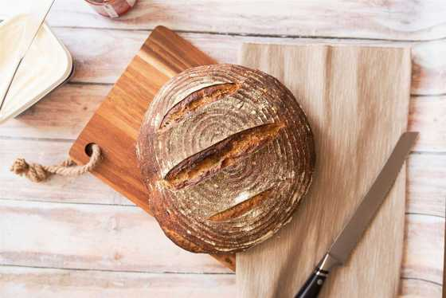
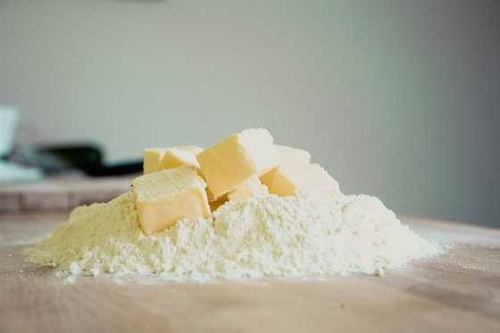
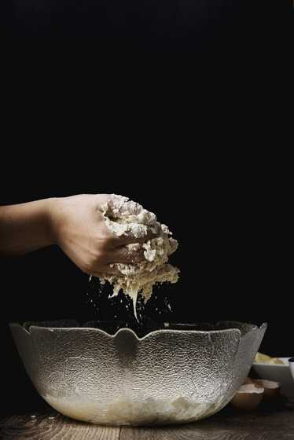
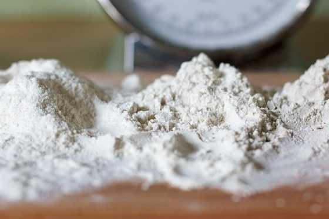
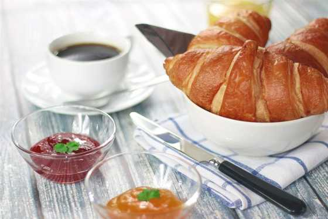
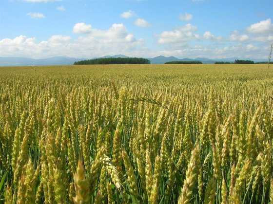

口コミ
以下は制作側が作成したイメージ例であり、実在のお客様の声ではありません。
イメージ例
朝にふらっと立ち寄れる、こぢんまりとしたパン屋さん。棚のパンを選ぶ時間が楽しいです。
イメージ例
車を停めやすく、買い物のついでに寄れるのがありがたい。落ち着いた雰囲気でした。
イメージ例
焼きたての香りに、つい予定より多く買ってしまいました。
お店について
店名の「huit(ユイット)」は、フランス語で数字の「8」を意味します。ブログでは、「8」の発音がフランス語の「oui(はい)」に近いことにも触れられています。
お店は2007年8月のオープンと紹介されており、有家のイオン近くの国道沿い、店の前には車を4〜5台停められるとされています。店内はこぢんまりとして落ち着いた雰囲気で、さまざまなパンが並ぶ小さなパン屋さんです。食べログではジャンルが「パン、カフェ」とされています。
情報源: 地元ブログ(diary.mizuyashiki.com 2012年・2015年の記事)、食べログ。内容は当時のもので、現在と異なる場合があります。ここから先の言い回しは制作側の表現です。




パンのある、ひとやすみ
いつものひとつに、あたらしいひとつ。毎日の中に、小さな「はい」をひとつ。


掲載の写真はフリー素材のイメージ写真です。実際のお店・商品ではなく、他の地域で撮影されたものや、撮影地が不明なものを含みます。
写真クレジット
縮小・切り抜きなどの加工をしています。
- shelf.jpg: Clark Young「Loaves of Bread」 CC0
- board.jpg: Ben Garratt CC0
- flour-butter.jpg: markusspiske CC0
- dough-bowl.jpg: Gaelle Marcel「Making Bread」 CC0
- flour.jpg: Mudd1「Flours」 CC BY-SA 3.0
- croissant.jpg: www.Pixel.la Free Stock Photos CC0
- sliced.jpg: Shixart1985「Fresh slices of bread」 CC BY 2.0
- loaf.jpg: Mike Finn「Tin Loaf」 CC BY 2.0
- round.jpg: Dana Hutchinson「Sourdough Loaf」 CC BY 3.0
- wheat.jpg: pakku「十勝・むぎ」 CC BY 3.0
- ear.jpg: Jez Timms「Lone ear of wheat」 CC0
- dusk.jpg: Cezanne Ali「Ears of wheat at dusk」 CC0